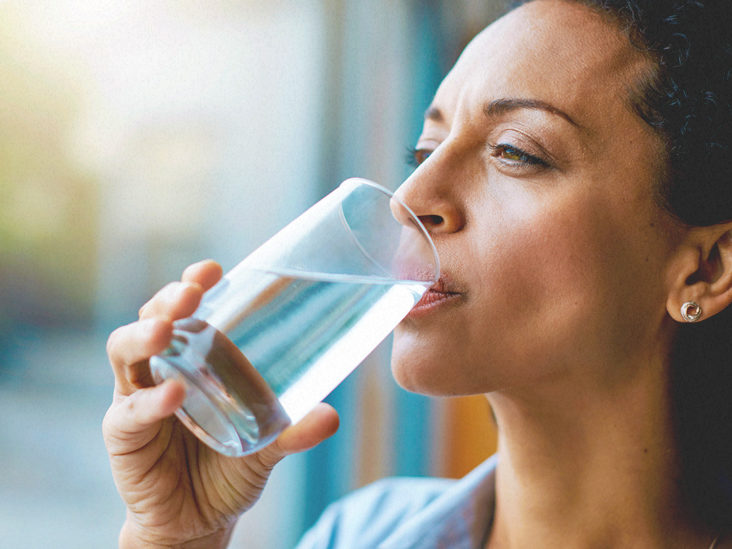

Water: Essential for the body
Drinking water does more than just quench your thirst — it’s essential to keeping your body functioning properly and feeling healthy. Nearly all of your body’s major systems depend on water to function and survive. You’d be surprised about what staying hydrated can do for your body.
